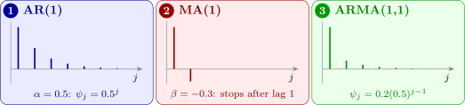

9.2 The \(\psi \) and \(\pi \) weights
It is useful to express an ARMA process as a pure MA process, \[ X_t = \psi (B)Z_t , \qquad \psi (B) = \sum _{i=0}^\infty \psi _iB^i = \frac {\theta (B)}{\phi (B)} , \] an MA operator that may be of finite or infinite order, and as a pure AR process, \[ \pi (B)X_t = Z_t , \qquad \pi (B) = \frac {\phi (B)}{\theta (B)} = 1 - \sum _{i=1}^\infty \pi _iB^i , \] so that \[ X_t = \sum _{i=1}^\infty \pi _iX_{t-i} + Z_t . \] From \(X_t = \psi (B)Z_t\) and \(\pi (B)X_t = Z_t\), we have \(\psi (B)\pi (B) = 1\), as it must be, since \[ \frac {\theta (B)}{\phi (B)}\cdot \frac {\phi (B)}{\theta (B)} = 1 . \] The \(\psi \) weights describe how a shock propagates: a shock \(Z_t\) of size \(1\) changes \(X_{t+j}\) by \(\psi _j\), so the sequence \(\psi _0, \psi _1, \dots \) is the impulse response of the process. The \(\pi \) weights describe how the current value depends on the past.
Proposition 9.2.1. The \(\psi \) weights satisfy \(\psi _0 = 1\) and \[ \psi _j = \alpha _1\psi _{j-1} + \alpha _2\psi _{j-2} + \dots + \alpha _p\psi _{j-p} + \beta _j , \qquad j \ge 1 , \] where \(\psi _i = 0\) for \(i < 0\) and \(\beta _j = 0\) for \(j > q\).
Proof. Equate coefficients of \(B^j\) in \(\phi (B)\psi (B) = \theta (B)\). The coefficient of \(B^j\) on the left is \(\psi _j - \alpha _1\psi _{j-1} - \dots - \alpha _p\psi _{j-p}\), and on the right it is \(\beta _j\) (with \(\beta _0 = 1\), giving \(\psi _0 = 1\)). □
The \(\pi \) weights are found the same way from \(\theta (B)\pi (B) = \phi (B)\). For \(j > q\) the \(\psi \) weights obey the AR recursion \(\psi _j = \sum _i\alpha _i\psi _{j-i}\), so they die away geometrically, as an AR ac.f. does.
Example 9.2.2. Find the \(\psi \) and \(\pi \) weights for the ARMA(1,1) process \(X_t = 0.5X_{t-1} + Z_t - 0.3Z_{t-1}\).
Solution. Here \(\phi (B) = 1 - 0.5B\) and \(\theta (B) = 1 - 0.3B\). The root of \(\phi (B) = 0\) is \(B = 1/0.5 = 2\), and that of \(\theta (B) = 0\) is \(B = 1/0.3 = 3.33\); both lie outside the unit circle, so the process is stationary and invertible. Then \begin {align*} \psi (B) &= \frac {\theta (B)}{\phi (B)} = (1 - 0.3B)(1 - 0.5B)^{-1} \\ &= (1 - 0.3B)(1 + 0.5B + 0.5^2B^2 + 0.5^3B^3 + \dots ) \\ &= 1 + (0.5 - 0.3)B + (0.25 - 0.15)B^2 + (0.125 - 0.075)B^3 + \dots \\ &= 1 + 0.2B + 0.1B^2 + 0.05B^3 + \dots , \end {align*}
so \(\psi _i = 0.2 \times 0.5^{i-1}\) for \(i = 1, 2, 3, \dots \). Similarly, \begin {align*} \pi (B) &= \frac {\phi (B)}{\theta (B)} = (1 - 0.5B)(1 + 0.3B + 0.09B^2 + \dots ) \\ &= 1 - 0.2B - 0.06B^2 - 0.018B^3 - \dots , \end {align*}
so \(\pi _i = 0.2 \times 0.3^{i-1}\) for \(i = 1, 2, \dots \). (Proposition 9.2.1 gives the same \(\psi \)’s: \(\psi _1 = 0.5 - 0.3 = 0.2\), then \(\psi _j = 0.5\psi _{j-1}\).)

Questions on this section
Stuck on something here? Ask below and it stays attached to this topic.